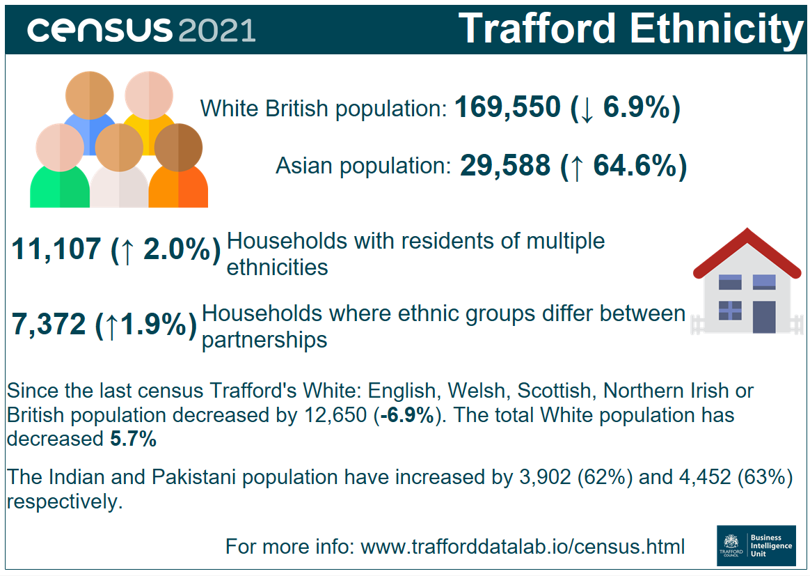

Source: Office for National Statistics.

The infographic, containing statistics released on from the census taken on Sunday 21 March 2021, shows that the White British population (White: English, Welsh, Scottish, Northern Irish or British) in Trafford is now 169,550. This is 12,650 fewer people compared to the previous census in 2011, representing a 6.9% decrease. The total White population has decreased by 5.7%. The Asian population is now 29,588 representing an increase of 64.6%, with the Indian and Pakistani populations specifically increasing by 3,902 (62%) and 4,452 (63%) respectively. The number of households with residents of multiple ethnicities has increased by 2% to 11,107 from the previous census and the number of households where ethnic groups differ between partnerships has increased by 1.9% to 7,372.